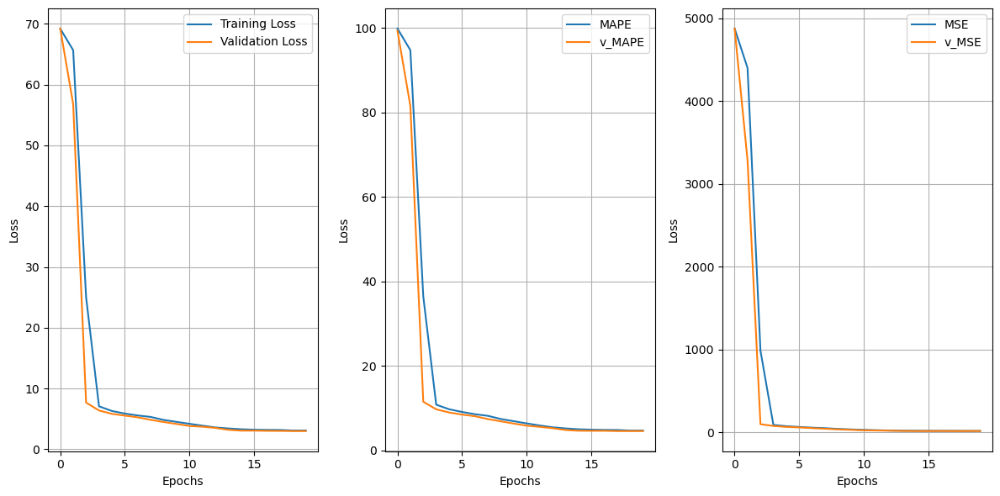
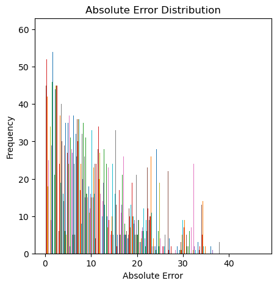

We are going to be working on a linear regression model using the following dataset found on Kaggle: Countries Life Expectancy to get the toes wet with linear regression. Let's do it.
# Base imports
import numpy as np
import pandas as pd
import os# load data
df = pd.read_csv('/kaggle/input/countries-life-expectancy/life_expectancy.csv')df.head(10)| Country | Year | Status | Population | Hepatitis B | Measles | Polio | Diphtheria | HIV/AIDS | infant deaths | under-five deaths | Total expenditure | GDP | BMI | thinness 1-19 years | Alcohol | Schooling | Life expectancy | |
|---|---|---|---|---|---|---|---|---|---|---|---|---|---|---|---|---|---|---|
| 0 | Afghanistan | 2015 | Developing | 33736494.0 | 65.0 | 1154 | 6.0 | 65.0 | 0.1 | 62 | 83 | 8.16 | 584.259210 | 19.1 | 17.2 | 0.01 | 10.1 | 65.0 |
| 1 | Afghanistan | 2014 | Developing | 327582.0 | 62.0 | 492 | 58.0 | 62.0 | 0.1 | 64 | 86 | 8.18 | 612.696514 | 18.6 | 17.5 | 0.01 | 10.0 | 59.9 |
| 2 | Afghanistan | 2013 | Developing | 31731688.0 | 64.0 | 430 | 62.0 | 64.0 | 0.1 | 66 | 89 | 8.13 | 631.744976 | 18.1 | 17.7 | 0.01 | 9.9 | 59.9 |
| 3 | Afghanistan | 2012 | Developing | 3696958.0 | 67.0 | 2787 | 67.0 | 67.0 | 0.1 | 69 | 93 | 8.52 | 669.959000 | 17.6 | 17.9 | 0.01 | 9.8 | 59.5 |
| 4 | Afghanistan | 2011 | Developing | 2978599.0 | 68.0 | 3013 | 68.0 | 68.0 | 0.1 | 71 | 97 | 7.87 | 63.537231 | 17.2 | 18.2 | 0.01 | 9.5 | 59.2 |
| 5 | Afghanistan | 2010 | Developing | 2883167.0 | 66.0 | 1989 | 66.0 | 66.0 | 0.1 | 74 | 102 | 9.20 | 553.328940 | 16.7 | 18.4 | 0.01 | 9.2 | 58.8 |
| 6 | Afghanistan | 2009 | Developing | 284331.0 | 63.0 | 2861 | 63.0 | 63.0 | 0.1 | 77 | 106 | 9.42 | 445.893298 | 16.2 | 18.6 | 0.01 | 8.9 | 58.6 |
| 7 | Afghanistan | 2008 | Developing | 2729431.0 | 64.0 | 1599 | 64.0 | 64.0 | 0.1 | 80 | 110 | 8.33 | 373.361116 | 15.7 | 18.8 | 0.03 | 8.7 | 58.1 |
| 8 | Afghanistan | 2007 | Developing | 26616792.0 | 63.0 | 1141 | 63.0 | 63.0 | 0.1 | 82 | 113 | 6.73 | 369.835796 | 15.2 | 19.0 | 0.02 | 8.4 | 57.5 |
| 9 | Afghanistan | 2006 | Developing | 2589345.0 | 64.0 | 1990 | 58.0 | 58.0 | 0.1 | 84 | 116 | 7.43 | 272.563770 | 14.7 | 19.2 | 0.03 | 8.1 | 57.3 |
df.shape(2848, 18)# find null values
null_counts = df.isnull().sum()
null_countsCountry 0
Year 0
Status 0
Population 644
Hepatitis B 542
Measles 0
Polio 19
Diphtheria 19
HIV/AIDS 0
infant deaths 0
under-five deaths 0
Total expenditure 221
GDP 442
BMI 32
thinness 1-19 years 32
Alcohol 188
Schooling 160
Life expectancy 0
dtype: int64null or nandf.isnull().sum()Country 0
Year 0
Status 0
Population 644
Hepatitis B 542
Measles 0
Polio 19
Diphtheria 19
HIV/AIDS 0
infant deaths 0
under-five deaths 0
Total expenditure 221
GDP 442
BMI 32
thinness 1-19 years 32
Alcohol 188
Schooling 160
Life expectancy 0
dtype: int64# print the rows with null values
df[df.isnull().any(axis=1)].head(25)| Country | Year | Status | Population | Hepatitis B | Measles | Polio | Diphtheria | HIV/AIDS | infant deaths | under-five deaths | Total expenditure | GDP | BMI | thinness 1-19 years | Alcohol | Schooling | Life expectancy | |
|---|---|---|---|---|---|---|---|---|---|---|---|---|---|---|---|---|---|---|
| 32 | Algeria | 2015 | Developing | 39871528.0 | 95.0 | 63 | 95.0 | 95.0 | 0.1 | 21 | 24 | NaN | 4132.762920 | 59.5 | 6.0 | NaN | 14.4 | 75.6 |
| 44 | Algeria | 2003 | Developing | 3243514.0 | NaN | 15374 | 87.0 | 87.0 | 0.1 | 20 | 23 | 3.60 | 294.335560 | 47.0 | 6.3 | 0.34 | 11.5 | 71.7 |
| 45 | Algeria | 2002 | Developing | 3199546.0 | NaN | 5862 | 86.0 | 86.0 | 0.1 | 20 | 23 | 3.73 | 1774.336730 | 46.1 | 6.3 | 0.36 | 11.1 | 71.6 |
| 46 | Algeria | 2001 | Developing | 31592153.0 | NaN | 2686 | 89.0 | 89.0 | 0.1 | 20 | 24 | 3.84 | 1732.857979 | 45.3 | 6.4 | 0.23 | 10.9 | 71.4 |
| 47 | Algeria | 2000 | Developing | 3118366.0 | NaN | 0 | 86.0 | 86.0 | 0.1 | 21 | 25 | 3.49 | 1757.177970 | 44.4 | 6.5 | 0.25 | 10.7 | 71.3 |
| 48 | Angola | 2015 | Developing | 2785935.0 | 64.0 | 118 | 7.0 | 64.0 | 1.9 | 66 | 98 | NaN | 3695.793748 | 23.3 | 8.3 | NaN | 11.4 | 52.4 |
| 57 | Angola | 2006 | Developing | 2262399.0 | NaN | 765 | 36.0 | 34.0 | 2.5 | 90 | 143 | 4.54 | 262.415149 | 18.2 | 9.8 | 5.84 | 7.2 | 47.7 |
| 58 | Angola | 2005 | Developing | 19552542.0 | NaN | 258 | 39.0 | 38.0 | 2.6 | 92 | 148 | 4.10 | 1443.991929 | 17.7 | 1.0 | 5.04 | 6.8 | 47.4 |
| 59 | Angola | 2004 | Developing | 18865716.0 | NaN | 29 | 4.0 | 4.0 | 2.5 | 94 | 152 | 4.71 | 141.868440 | 17.2 | 1.2 | 3.53 | 6.4 | 47.1 |
| 60 | Angola | 2003 | Developing | 1823369.0 | NaN | 1196 | 4.0 | 4.0 | 2.4 | 95 | 155 | 4.41 | 779.468356 | 16.8 | 1.4 | 3.49 | 5.9 | 46.8 |
| 61 | Angola | 2002 | Developing | 17572649.0 | NaN | 11945 | 37.0 | 41.0 | 2.3 | 96 | 157 | 3.63 | 711.181716 | 16.3 | 1.5 | 2.82 | 5.5 | 46.5 |
| 62 | Angola | 2001 | Developing | 16983266.0 | NaN | 9046 | 41.0 | 38.0 | 2.1 | 97 | 159 | 5.38 | 526.168743 | 15.8 | 1.7 | 2.58 | 5.1 | 45.7 |
| 63 | Angola | 2000 | Developing | 1644924.0 | NaN | 2219 | 3.0 | 28.0 | 2.0 | 97 | 160 | 2.79 | 555.296942 | 15.4 | 1.9 | 1.85 | 4.6 | 45.3 |
| 64 | Antigua and Barbuda | 2015 | Developing | NaN | 99.0 | 0 | 86.0 | 99.0 | 0.2 | 0 | 0 | NaN | 13566.954100 | 47.7 | 3.3 | NaN | 13.9 | 76.4 |
| 65 | Antigua and Barbuda | 2014 | Developing | NaN | 99.0 | 0 | 96.0 | 99.0 | 0.2 | 0 | 0 | 5.54 | 12888.296670 | 47.0 | 3.3 | 8.56 | 13.9 | 76.2 |
| 66 | Antigua and Barbuda | 2013 | Developing | NaN | 99.0 | 0 | 98.0 | 99.0 | 0.2 | 0 | 0 | 5.33 | 12224.864160 | 46.4 | 3.3 | 8.58 | 13.9 | 76.1 |
| 67 | Antigua and Barbuda | 2012 | Developing | NaN | 98.0 | 0 | 97.0 | 98.0 | 0.2 | 0 | 0 | 5.39 | 12565.441970 | 45.7 | 3.3 | 8.18 | 13.8 | 75.9 |
| 68 | Antigua and Barbuda | 2011 | Developing | NaN | 99.0 | 0 | 99.0 | 99.0 | 0.1 | 0 | 0 | 5.65 | 11929.349910 | 45.1 | 3.3 | 7.84 | 14.1 | 75.7 |
| 69 | Antigua and Barbuda | 2010 | Developing | NaN | 98.0 | 0 | 99.0 | 98.0 | 0.1 | 0 | 0 | 5.63 | 12126.876140 | 44.4 | 3.3 | 7.84 | 14.1 | 75.6 |
| 70 | Antigua and Barbuda | 2009 | Developing | NaN | 98.0 | 0 | 98.0 | 99.0 | 0.1 | 0 | 0 | 4.86 | 1312.466920 | 43.8 | 3.4 | 7.82 | 14.2 | 75.4 |
| 71 | Antigua and Barbuda | 2008 | Developing | NaN | 98.0 | 0 | 99.0 | 99.0 | 0.1 | 0 | 0 | 4.69 | 1473.319230 | 43.2 | 3.4 | 8.27 | 14.4 | 75.2 |
| 72 | Antigua and Barbuda | 2007 | Developing | NaN | 97.0 | 0 | 98.0 | 99.0 | 0.1 | 0 | 0 | 4.27 | 14252.294520 | 42.6 | 3.4 | 8.64 | 14.5 | 75.0 |
| 73 | Antigua and Barbuda | 2006 | Developing | NaN | 99.0 | 0 | 99.0 | 99.0 | 0.1 | 0 | 0 | 4.34 | 12724.393770 | 42.0 | 3.4 | 8.93 | 14.7 | 74.8 |
| 74 | Antigua and Barbuda | 2005 | Developing | NaN | 99.0 | 0 | 98.0 | 99.0 | 0.1 | 0 | 0 | 4.41 | 11371.938950 | 41.4 | 3.5 | 8.15 | 0.0 | 74.6 |
| 75 | Antigua and Barbuda | 2004 | Developing | NaN | 97.0 | 0 | 97.0 | 97.0 | 0.1 | 0 | 0 | 4.21 | 1352.837400 | 4.8 | 3.5 | 7.28 | 0.0 | 74.4 |
From the short sample above, population is missing, alcohol is missing, hep B is missing, and many more are from the below command:
df.isnull().sum()Country 0
Year 0
Status 0
Population 644
Hepatitis B 542
Measles 0
Polio 19
Diphtheria 19
HIV/AIDS 0
infant deaths 0
under-five deaths 0
Total expenditure 221
GDP 442
BMI 32
thinness 1-19 years 32
Alcohol 188
Schooling 160
Life expectancy 0
dtype: int64We are going to try to find out more about the columns and what might be useful for training a linear regression model.
columns = df.columns.tolist()
columns['Country',
'Year',
'Status',
'Population',
'Hepatitis B',
'Measles',
'Polio',
'Diphtheria',
'HIV/AIDS',
'infant deaths',
'under-five deaths',
'Total expenditure',
'GDP',
'BMI',
'thinness 1-19 years',
'Alcohol',
'Schooling',
'Life expectancy']For each of the columns, if the data in the column is of type number
we are going to print out the general information for it: (mean, std,
etc) and for non-numbered data columns we are going to print out all the
possible items found within the dataset. One example for the latter
might be for the Status column to have
[Developing, Developed]
for col in columns:
print(f"Column '{col}':")
if pd.api.types.is_numeric_dtype(df[col]): # if column has numeric values
print(df[col].describe())
else: # column has string values
print(df[col].unique())
print()
Column 'Country':
['Afghanistan' 'Albania' 'Algeria' 'Angola' 'Antigua and Barbuda'
'Argentina' 'Armenia' 'Australia' 'Austria' 'Azerbaijan' 'Bahamas'
'Bahrain' 'Bangladesh' 'Barbados' 'Belarus' 'Belgium' 'Belize' 'Benin'
'Bhutan' 'Bolivia (Plurinational State of)' 'Bosnia and Herzegovina'
'Botswana' 'Brazil' 'Brunei Darussalam' 'Bulgaria' 'Burkina Faso'
"Côte d'Ivoire" 'Cabo Verde' 'Cambodia' 'Cameroon' 'Canada'
'Central African Republic' 'Chad' 'Chile' 'Colombia' 'Comoros' 'Congo'
'Costa Rica' 'Croatia' 'Cuba' 'Cyprus' 'Czechia'
"Democratic People's Republic of Korea"
'Democratic Republic of the Congo' 'Denmark' 'Djibouti'
'Dominican Republic' 'Ecuador' 'Egypt' 'El Salvador' 'Equatorial Guinea'
'Eritrea' 'Estonia' 'Fiji' 'Finland' 'France' 'Gabon' 'Gambia' 'Georgia'
'Germany' 'Ghana' 'Greece' 'Grenada' 'Guatemala' 'Guinea' 'Guinea-Bissau'
'Guyana' 'Haiti' 'Honduras' 'Hungary' 'Iceland' 'India' 'Indonesia'
'Iran (Islamic Republic of)' 'Iraq' 'Ireland' 'Israel' 'Italy' 'Jamaica'
'Japan' 'Jordan' 'Kazakhstan' 'Kenya' 'Kiribati' 'Kuwait' 'Kyrgyzstan'
"Lao People's Democratic Republic" 'Lebanon' 'Lesotho' 'Liberia' 'Libya'
'Lithuania' 'Luxembourg' 'Madagascar' 'Malawi' 'Malaysia' 'Maldives'
'Mali' 'Malta' 'Mauritania' 'Mauritius' 'Mexico'
'Micronesia (Federated States of)' 'Mongolia' 'Montenegro' 'Morocco'
'Mozambique' 'Myanmar' 'Namibia' 'Nepal' 'Netherlands' 'New Zealand'
'Nicaragua' 'Niger' 'Nigeria' 'Norway' 'Oman' 'Pakistan' 'Panama'
'Paraguay' 'Peru' 'Philippines' 'Poland' 'Portugal' 'Qatar'
'Republic of Korea' 'Republic of Moldova' 'Romania' 'Russian Federation'
'Rwanda' 'Saint Lucia' 'Saint Vincent and the Grenadines' 'Samoa'
'Sao Tome and Principe' 'Saudi Arabia' 'Senegal' 'Serbia' 'Seychelles'
'Sierra Leone' 'Singapore' 'Slovakia' 'Slovenia' 'Solomon Islands'
'Somalia' 'South Africa' 'South Sudan' 'Spain' 'Sri Lanka' 'Sudan'
'Suriname' 'Swaziland' 'Sweden' 'Switzerland' 'Syrian Arab Republic'
'Tajikistan' 'Thailand' 'The former Yugoslav republic of Macedonia'
'Timor-Leste' 'Togo' 'Tonga' 'Trinidad and Tobago' 'Tunisia' 'Turkey'
'Turkmenistan' 'Uganda' 'Ukraine' 'United Arab Emirates'
'United Kingdom of Great Britain and Northern Ireland'
'United Republic of Tanzania' 'United States of America' 'Uruguay'
'Uzbekistan' 'Vanuatu' 'Venezuela (Bolivarian Republic of)' 'Viet Nam'
'Yemen' 'Zambia' 'Zimbabwe']
Column 'Year':
count 2848.000000
mean 2007.500000
std 4.610582
min 2000.000000
25% 2003.750000
50% 2007.500000
75% 2011.250000
max 2015.000000
Name: Year, dtype: float64
Column 'Status':
['Developing' 'Developed']
Column 'Population':
count 2.204000e+03
mean 1.283457e+07
std 6.196094e+07
min 3.400000e+01
25% 1.967585e+05
50% 1.391756e+06
75% 7.438947e+06
max 1.293859e+09
Name: Population, dtype: float64
Column 'Hepatitis B':
count 2306.000000
mean 81.076756
std 25.019068
min 1.000000
25% 77.000000
50% 92.000000
75% 97.000000
max 99.000000
Name: Hepatitis B, dtype: float64
Column 'Measles':
count 2848.000000
mean 2083.082163
std 10249.107207
min 0.000000
25% 0.000000
50% 16.000000
75% 336.750000
max 212183.000000
Name: Measles, dtype: float64
Column 'Polio':
count 2829.000000
mean 82.682220
std 23.434954
min 3.000000
25% 78.000000
50% 93.000000
75% 97.000000
max 99.000000
Name: Polio, dtype: float64
Column 'Diphtheria':
count 2829.000000
mean 82.451396
std 23.693936
min 2.000000
25% 78.000000
50% 93.000000
75% 97.000000
max 99.000000
Name: Diphtheria, dtype: float64
Column 'HIV/AIDS':
count 2848.000000
mean 1.756461
std 5.148935
min 0.100000
25% 0.100000
50% 0.100000
75% 0.700000
max 50.600000
Name: HIV/AIDS, dtype: float64
Column 'infant deaths':
count 2848.000000
mean 28.359902
std 117.188032
min 0.000000
25% 0.000000
50% 3.000000
75% 20.000000
max 1800.000000
Name: infant deaths, dtype: float64
Column 'under-five deaths':
count 2848.000000
mean 39.500000
std 159.800866
min 0.000000
25% 0.000000
50% 4.000000
75% 25.000000
max 2500.000000
Name: under-five deaths, dtype: float64
Column 'Total expenditure':
count 2627.000000
mean 5.935577
std 2.504439
min 0.370000
25% 4.240000
50% 5.760000
75% 7.530000
max 17.600000
Name: Total expenditure, dtype: float64
Column 'GDP':
count 2406.000000
mean 7664.398813
std 14466.241793
min 1.681350
25% 477.541713
50% 1841.086830
75% 6265.658907
max 119172.741800
Name: GDP, dtype: float64
Column 'BMI':
count 2816.000000
mean 38.503374
std 19.955485
min 1.000000
25% 19.500000
50% 43.900000
75% 56.200000
max 77.600000
Name: BMI, dtype: float64
Column 'thinness 1-19 years':
count 2816.000000
mean 4.847230
std 4.443695
min 0.100000
25% 1.600000
50% 3.300000
75% 7.125000
max 27.700000
Name: thinness 1-19 years, dtype: float64
Column 'Alcohol':
count 2660.000000
mean 4.638932
std 4.064721
min 0.010000
25% 0.930000
50% 3.785000
75% 7.810000
max 17.870000
Name: Alcohol, dtype: float64
Column 'Schooling':
count 2688.000000
mean 12.060156
std 3.320160
min 0.000000
25% 10.200000
50% 12.400000
75% 14.300000
max 20.700000
Name: Schooling, dtype: float64
Column 'Life expectancy':
count 2848.000000
mean 69.347402
std 9.528332
min 36.300000
25% 63.500000
50% 72.200000
75% 75.800000
max 89.000000
Name: Life expectancy, dtype: float64
# convert the Status column's value in the following way:
# Developing: 0, Developed: 1
df['Status'] = df['Status'].replace({'Developing': 0, 'Developed': 1})From the below code, there doesn't seem to be a strong correlation with any of the data directly to life expectancy, perhaps because of outliers and also because this data is not cleaned yet, but maybe a sign to use a Neural Network of some sort.
df.corr(numeric_only=True)['Life expectancy']Year 0.169144
Status 0.483330
Population -0.019353
Hepatitis B 0.256613
Measles -0.198178
Polio 0.464366
Diphtheria 0.476795
HIV/AIDS -0.559105
infant deaths -0.201055
under-five deaths -0.224903
Total expenditure 0.222788
GDP 0.460414
BMI 0.567650
thinness 1-19 years -0.477009
Alcohol 0.401553
Schooling 0.747482
Life expectancy 1.000000
Name: Life expectancy, dtype: float64Looking at Poland and other countries' data, there is a lot of information that is off. For example, Measels is recorded to have multiple zero values which does not seem very representative of the real circumstances. Moreover, population and GDP also seem to have extreme outliers. For just Poland for now, let's try to minimize these errors by using the Modified Z-Score, which calculates a Z-Score based on the median of the data.
poland = df[df['Country'] == 'Poland']
poland| Country | Year | Status | Population | Hepatitis B | Measles | Polio | Diphtheria | HIV/AIDS | infant deaths | under-five deaths | Total expenditure | GDP | BMI | thinness 1-19 years | Alcohol | Schooling | Life expectancy | |
|---|---|---|---|---|---|---|---|---|---|---|---|---|---|---|---|---|---|---|
| 1952 | Poland | 2015 | 1 | 37986412.0 | 96.0 | 0 | 92.0 | 98.0 | 0.1 | 2 | 2 | NaN | 12565.987600 | 61.7 | 1.9 | NaN | 16.4 | 77.5 |
| 1953 | Poland | 2014 | 1 | 3811735.0 | 96.0 | 0 | 94.0 | 98.0 | 0.1 | 2 | 2 | 6.35 | 14341.675000 | 61.1 | 1.9 | 10.71 | 16.4 | 77.3 |
| 1954 | Poland | 2013 | 1 | 384196.0 | 96.0 | 84 | 95.0 | 99.0 | 0.1 | 2 | 2 | 6.40 | 1378.549110 | 6.4 | 2.0 | 11.63 | 15.4 | 77.1 |
| 1955 | Poland | 2012 | 1 | 3863164.0 | 97.0 | 71 | 95.0 | 99.0 | 0.1 | 2 | 2 | 6.62 | 13145.148400 | 59.7 | 2.0 | 10.81 | 15.3 | 76.8 |
| 1956 | Poland | 2011 | 1 | 3863255.0 | 98.0 | 0 | 96.0 | 99.0 | 0.1 | 2 | 2 | 6.70 | 13893.187680 | 59.1 | 2.0 | 10.93 | 15.4 | 76.7 |
| 1957 | Poland | 2010 | 1 | 3842794.0 | 98.0 | 13 | 96.0 | 99.0 | 0.1 | 2 | 2 | 6.88 | 12599.524860 | 58.4 | 2.1 | 10.59 | 15.1 | 76.3 |
| 1958 | Poland | 2009 | 1 | 3815163.0 | 98.0 | 115 | 96.0 | 99.0 | 0.1 | 2 | 3 | 7.12 | 11527.593230 | 57.8 | 2.1 | 10.70 | 15.1 | 75.7 |
| 1959 | Poland | 2008 | 1 | 38125759.0 | 98.0 | 0 | 96.0 | 99.0 | 0.1 | 2 | 3 | 6.88 | 141.446880 | 57.2 | 2.2 | 11.40 | 15.0 | 75.5 |
| 1960 | Poland | 2007 | 1 | 381256.0 | 98.0 | 40 | 99.0 | 99.0 | 0.1 | 2 | 3 | 6.28 | 1126.318520 | 56.6 | 2.2 | 10.90 | 15.0 | 75.3 |
| 1961 | Poland | 2006 | 1 | 38141267.0 | 98.0 | 120 | 99.0 | 99.0 | 0.1 | 2 | 3 | 6.17 | 94.772600 | 56.0 | 2.3 | 10.40 | 15.0 | 75.2 |
| 1962 | Poland | 2005 | 1 | 38165445.0 | 98.0 | 13 | 99.0 | 99.0 | 0.1 | 2 | 3 | 6.20 | 821.251569 | 55.5 | 2.3 | 9.50 | 14.8 | 75.0 |
| 1963 | Poland | 2004 | 1 | 38182222.0 | 98.0 | 11 | 99.0 | 99.0 | 0.1 | 2 | 3 | 6.19 | 6681.178818 | 55.0 | 2.4 | 9.19 | 15.5 | 74.9 |
| 1964 | Poland | 2003 | 1 | 382457.0 | 97.0 | 48 | 98.0 | 99.0 | 0.1 | 3 | 3 | 6.22 | 5693.524160 | 54.5 | 2.4 | 9.06 | 15.3 | 74.7 |
| 1965 | Poland | 2002 | 1 | 3823364.0 | 98.0 | 34 | 98.0 | 99.0 | 0.1 | 3 | 3 | 6.32 | 5196.932921 | 54.0 | 2.5 | 8.02 | 15.0 | 74.5 |
| 1966 | Poland | 2001 | 1 | 3824876.0 | 95.0 | 133 | 98.0 | 98.0 | 0.1 | 3 | 3 | 5.86 | 4981.198619 | 53.6 | 2.5 | 7.74 | 14.7 | 74.2 |
| 1967 | Poland | 2000 | 1 | 38258629.0 | 99.0 | 77 | 98.0 | 98.0 | 0.1 | 3 | 4 | 5.50 | 4492.727640 | 53.1 | 2.5 | 8.40 | 14.6 | 73.7 |
Modified Z-Score for Poland's population
from scipy.stats import median_abs_deviation # MAD Calculation
# calculate median
median = np.median(poland['Population'])
# calculate mean absolute deviation
mad = median_abs_deviation(poland['Population'])
# set threshold for outlier detection
threshold = 0.6
# this threshold for population is very low compared to recommended value of 3.5
# calculate modified z-score
modified_z_score = (0.6745 * (poland['Population'] - median)) / mad
# filter the dataframe to remove outliers
filtered = poland[np.abs(modified_z_score) <= threshold]
filtered| Country | Year | Status | Population | Hepatitis B | Measles | Polio | Diphtheria | HIV/AIDS | infant deaths | under-five deaths | Total expenditure | GDP | BMI | thinness 1-19 years | Alcohol | Schooling | Life expectancy | |
|---|---|---|---|---|---|---|---|---|---|---|---|---|---|---|---|---|---|---|
| 1953 | Poland | 2014 | 1 | 3811735.0 | 96.0 | 0 | 94.0 | 98.0 | 0.1 | 2 | 2 | 6.35 | 14341.675000 | 61.1 | 1.9 | 10.71 | 16.4 | 77.3 |
| 1955 | Poland | 2012 | 1 | 3863164.0 | 97.0 | 71 | 95.0 | 99.0 | 0.1 | 2 | 2 | 6.62 | 13145.148400 | 59.7 | 2.0 | 10.81 | 15.3 | 76.8 |
| 1956 | Poland | 2011 | 1 | 3863255.0 | 98.0 | 0 | 96.0 | 99.0 | 0.1 | 2 | 2 | 6.70 | 13893.187680 | 59.1 | 2.0 | 10.93 | 15.4 | 76.7 |
| 1957 | Poland | 2010 | 1 | 3842794.0 | 98.0 | 13 | 96.0 | 99.0 | 0.1 | 2 | 2 | 6.88 | 12599.524860 | 58.4 | 2.1 | 10.59 | 15.1 | 76.3 |
| 1958 | Poland | 2009 | 1 | 3815163.0 | 98.0 | 115 | 96.0 | 99.0 | 0.1 | 2 | 3 | 7.12 | 11527.593230 | 57.8 | 2.1 | 10.70 | 15.1 | 75.7 |
| 1965 | Poland | 2002 | 1 | 3823364.0 | 98.0 | 34 | 98.0 | 99.0 | 0.1 | 3 | 3 | 6.32 | 5196.932921 | 54.0 | 2.5 | 8.02 | 15.0 | 74.5 |
| 1966 | Poland | 2001 | 1 | 3824876.0 | 95.0 | 133 | 98.0 | 98.0 | 0.1 | 3 | 3 | 5.86 | 4981.198619 | 53.6 | 2.5 | 7.74 | 14.7 | 74.2 |
In this example we actually end up filtering out the correct populations of 38 million and simply
For this specific model, we are going to use the following variables to predict the life expectancy:
As opposed to doing modified Z-score, we are simply going to pick columns that have a general trend and are not too chaotic to predict life expectancy. This way, sure we are still including outliers but they should be balanced with the rest of the data set. We remove the statistic Measles, because somtimes we would have invalid values of >1000 for the statistic: "The number of reported measles cases per 1000 people" from looking at some developing countries.
features = ['Status', 'Polio', 'Diphtheria', \
'HIV/AIDS', 'infant deaths', \
'under-five deaths', 'Total expenditure',\
'BMI', 'thinness 1-19 years', \
'Alcohol', 'Schooling']We are going to split up the data, then use it to train our model. Ideally, we would want to use a training set, a validation set, and then a testing set. For this example I am going to use only the training set and testing set just to get some grips. We are going to see whether or not it may cause overfitting to the model.
# use dropna to only drop na's from the features we are trying to test
df_train = df[df['Year'] <= 2012].dropna(subset=features)
df_test = df[df['Year'] > 2012].dropna(subset=features)
print(df_train.shape)
print(df_test.shape)(2147, 18)
(334, 18)
The year 2012 produces roughly an 80 20 split of the data [87 : 13], now let's try to train it using sklearn.
from sklearn.linear_model import LinearRegression
linear = LinearRegression()
target = "Life expectancy"LinearRegression().fit(x, y) takes input variables and tries to fit those values to the corresponding output value. This method returns a fitted estimator of the data.
linear.fit(df_train[features], df_train[target])LinearRegression()In a Jupyter environment, please rerun this cell to show the HTML representation or trust the notebook.
LinearRegression()
Now make predictions with the testing data.
predictions = linear.predict(df_test[features])predictionsarray([63.28493162, 64.27769707, 64.24859625, 75.27033822, 75.09546198,
75.09455566, 75.67042168, 75.5674344 , 64.72692714, 64.79060448,
73.62910063, 73.65050985, 79.21344943, 79.23629543, 72.82693221,
72.88084677, 86.10000331, 85.86183729, 79.56071386, 79.132046 ,
72.32717225, 69.03080151, 72.75008102, 72.78604679, 75.84212379,
75.8650568 , 67.45418302, 67.26566414, 75.61516906, 75.3735592 ,
76.54800706, 76.38556271, 80.84777011, 80.89375474, 69.69366366,
72.42435932, 66.31216642, 65.61576181, 70.08576218, 69.9833968 ,
74.48122982, 74.20373587, 74.16342442, 74.25302967, 70.37938279,
69.99105372, 76.58132703, 75.3147985 , 73.36448854, 75.28235669,
78.1310823 , 77.99838215, 62.64991602, 61.56493012, 70.872569 ,
72.43673557, 68.42888699, 66.82594233, 64.97802217, 64.80220869,
77.53687864, 77.48479044, 57.63558552, 55.83182247, 57.17589289,
57.08545012, 77.78829449, 74.67105451, 69.22266128, 73.57817612,
67.88597507, 67.55055629, 62.03831576, 66.4800068 , 74.44498136,
74.35477112, 78.84277519, 78.57979455, 71.6660567 , 75.81781643,
78.49059565, 77.43913431, 84.41378739, 83.37668892, 61.11522541,
60.92975373, 71.17473782, 72.67477566, 73.84684464, 73.21170279,
71.51480137, 74.44850268, 73.57589434, 73.44234334, 58.62753644,
56.38040847, 60.09866227, 60.11637266, 78.36257985, 78.39457351,
77.06726094, 76.76396422, 78.67210514, 78.6454721 , 77.43905014,
77.5072683 , 66.28674908, 67.47671129, 65.02979872, 65.0881979 ,
73.4490736 , 73.56486948, 81.2270811 , 81.07798155, 69.34626657,
65.8439691 , 79.39576605, 79.21577675, 75.74669664, 76.13209337,
68.47462227, 69.4284191 , 62.02441871, 62.47129517, 63.82243698,
62.91266769, 68.5682732 , 68.55293412, 64.97910191, 65.41127171,
68.18636685, 71.04329185, 81.07887315, 79.52767157, 75.9714915 ,
80.83334805, 74.49902042, 70.8401859 , 70.57013197, 72.76382284,
76.3707057 , 76.41857878, 68.31154669, 67.15413451, 83.68576647,
83.64783531, 77.92962151, 77.82397086, 80.87711054, 81.1979738 ,
72.57648043, 72.30601381, 78.4167785 , 77.7683826 , 74.36522602,
74.32762524, 75.74034336, 75.77161573, 66.47520823, 65.07594091,
72.66080086, 73.62678216, 70.71293595, 71.2146239 , 72.59992122,
72.22583114, 66.5251915 , 66.08054518, 73.32323065, 73.28699871,
60.97824448, 60.79887415, 62.89264576, 65.48090617, 74.41298198,
74.49792487, 80.22905801, 80.07087462, 74.34057063, 74.32616412,
65.21120056, 66.02124183, 64.07825827, 63.68915426, 72.54506289,
72.22861364, 70.61863412, 70.24914773, 61.47598447, 59.37804188,
78.6531124 , 78.48408632, 62.97346204, 59.47729302, 74.37728622,
74.3818426 , 73.76290316, 73.24985114, 71.2718747 , 71.50463038,
76.07162079, 73.19183159, 76.50410476, 73.47453547, 72.70717374,
72.6456079 , 62.69643707, 61.78537158, 65.53123655, 64.59679335,
68.31673613, 68.10024555, 69.68782951, 69.44226371, 84.09026014,
83.02687603, 84.58032396, 84.62719607, 71.39413139, 71.2497909 ,
57.07433471, 57.212554 , 55.03024141, 53.58639062, 79.3429749 ,
79.10816197, 74.39877515, 74.35617183, 65.9489262 , 65.75825716,
67.93438432, 69.54888002, 71.62850789, 69.57556582, 73.59670618,
72.86434158, 68.82939864, 69.75723616, 80.73075505, 76.16550381,
78.15151872, 77.43537566, 74.62927564, 74.86715198, 79.1350676 ,
78.07372115, 75.79868318, 75.30891527, 67.28081736, 67.08158799,
72.45679027, 72.38566758, 73.24053627, 73.28153695, 72.64336739,
72.8636013 , 67.61071872, 69.07396875, 77.88367647, 77.16781725,
65.38176969, 65.0393611 , 74.90250319, 74.78071558, 72.82889369,
73.11810039, 65.39023278, 65.41898819, 78.44226457, 78.50508405,
78.80680048, 78.77654688, 82.03745066, 81.01581952, 68.58547716,
68.74020574, 66.75074668, 68.24725704, 83.48502883, 82.42010017,
72.31260616, 71.97761959, 71.94697922, 71.97956388, 65.34583458,
63.67509382, 79.94831882, 79.92443263, 79.74146321, 79.57345789,
65.41387719, 69.33288008, 70.48249548, 70.34294422, 72.49512271,
72.5296839 , 73.63167428, 73.74922574, 69.83907307, 69.49706754,
68.83035928, 68.44598107, 73.33018822, 75.89818716, 71.56709598,
71.52544512, 72.7699083 , 75.89432363, 76.15421848, 76.12622032,
70.33586196, 70.17163129, 63.8257878 , 63.11621233, 69.18342035,
71.59013369, 74.39637723, 71.06658623, 76.83424233, 76.75897656,
72.20907206, 72.0332648 , 68.77446201, 68.77730286, 74.2745724 ,
74.45026269, 69.66084003, 68.07193834, 63.28810188, 65.3195207 ,
67.08485043, 66.21657961, 63.35835326, 61.79454959])This gives us an array of values that we can use to understand our predictions. However, they are not fit to a particular country and we cannot really understand the error yet either. Let's try and do that.
To start to understand our predictions, we can make a new column in the testing dataframe and add in our prediction values.
df_test['Predictions'] = predictions
df_test| Country | Year | Status | Population | Hepatitis B | Measles | Polio | Diphtheria | HIV/AIDS | infant deaths | under-five deaths | Total expenditure | GDP | BMI | thinness 1-19 years | Alcohol | Schooling | Life expectancy | Predictions | |
|---|---|---|---|---|---|---|---|---|---|---|---|---|---|---|---|---|---|---|---|
| 0 | Afghanistan | 2015 | 0 | 33736494.0 | 65.0 | 1154 | 6.0 | 65.0 | 0.1 | 62 | 83 | 8.16 | 584.259210 | 19.1 | 17.2 | 0.01 | 10.1 | 65.0 | 63.284932 |
| 1 | Afghanistan | 2014 | 0 | 327582.0 | 62.0 | 492 | 58.0 | 62.0 | 0.1 | 64 | 86 | 8.18 | 612.696514 | 18.6 | 17.5 | 0.01 | 10.0 | 59.9 | 64.277697 |
| 2 | Afghanistan | 2013 | 0 | 31731688.0 | 64.0 | 430 | 62.0 | 64.0 | 0.1 | 66 | 89 | 8.13 | 631.744976 | 18.1 | 17.7 | 0.01 | 9.9 | 59.9 | 64.248596 |
| 16 | Albania | 2015 | 0 | 28873.0 | 99.0 | 0 | 99.0 | 99.0 | 0.1 | 0 | 0 | 6.00 | 3954.227830 | 58.0 | 1.2 | 4.60 | 14.2 | 77.8 | 75.270338 |
| 17 | Albania | 2014 | 0 | 288914.0 | 98.0 | 0 | 98.0 | 98.0 | 0.1 | 0 | 1 | 5.88 | 4575.763787 | 57.2 | 1.2 | 4.51 | 14.2 | 77.5 | 75.095462 |
| ... | ... | ... | ... | ... | ... | ... | ... | ... | ... | ... | ... | ... | ... | ... | ... | ... | ... | ... | ... |
| 2802 | Yemen | 2013 | 0 | NaN | 73.0 | 400 | 67.0 | 73.0 | 0.1 | 36 | 46 | 5.78 | NaN | 39.6 | 13.7 | 0.04 | 9.0 | 65.4 | 65.319521 |
| 2817 | Zambia | 2014 | 0 | 1562974.0 | 86.0 | 9 | 78.0 | 86.0 | 4.3 | 28 | 41 | 4.99 | 1738.882200 | 22.8 | 6.3 | 0.01 | 12.5 | 61.1 | 67.084850 |
| 2818 | Zambia | 2013 | 0 | 1515321.0 | 79.0 | 35 | 74.0 | 79.0 | 4.8 | 29 | 42 | 4.99 | 185.793359 | 22.3 | 6.4 | 2.41 | 12.5 | 63.0 | 66.216580 |
| 2833 | Zimbabwe | 2014 | 0 | 15411675.0 | 91.0 | 0 | 92.0 | 91.0 | 6.3 | 23 | 34 | 6.44 | 127.474620 | 31.3 | 5.9 | 6.50 | 10.3 | 59.2 | 63.358353 |
| 2834 | Zimbabwe | 2013 | 0 | 155456.0 | 95.0 | 0 | 95.0 | 95.0 | 6.8 | 25 | 36 | 6.88 | 111.227396 | 3.8 | 6.2 | 6.39 | 10.4 | 58.0 | 61.794550 |
334 rows × 19 columns
We are going to use mean absolute error from sklearn to try to understand our general loss, that is our variability of our prediction to the actual value.
from sklearn.metrics import mean_absolute_error
error = mean_absolute_error(df_test[target], df_test['Predictions'])
error3.283831410713536From the value, we can conclude that on average we were off by about 3.28 years on the life expectancy. This isn't too bad, and perhaps including other features could help the model do better.
df_test.describe()[target]count 334.000000
mean 71.757186
std 8.227004
min 48.100000
25% 66.000000
50% 73.800000
75% 76.800000
max 89.000000
Name: Life expectancy, dtype: float64Also, for our target variable, the standard deviation is higher than our error which is what we want, if the error is higher then we have made a coding mistake.
Let's take a look at some countries.
df_test[df_test['Country'] == 'Grenada'].loc[:, ['Country', 'Life expectancy', 'Predictions']]| Country | Life expectancy | Predictions | |
|---|---|---|---|
| 993 | Grenada | 73.5 | 75.746697 |
| 994 | Grenada | 73.3 | 76.132093 |
df_test[df_test['Country'] == 'Central African Republic'].loc[:, ['Country', 'Life expectancy', 'Predictions']]| Country | Life expectancy | Predictions | |
|---|---|---|---|
| 497 | Central African Republic | 58.0 | 57.635586 |
| 498 | Central African Republic | 49.9 | 55.831822 |
df_test[df_test['Country'] == 'Poland'].loc[:, ['Country', 'Life expectancy', 'Predictions']]| Country | Life expectancy | Predictions | |
|---|---|---|---|
| 1953 | Poland | 77.3 | 80.730755 |
| 1954 | Poland | 77.1 | 76.165504 |
df_test[df_test['Country'] == 'Yemen'].loc[:, ['Country', 'Life expectancy', 'Predictions']]| Country | Life expectancy | Predictions | |
|---|---|---|---|
| 2801 | Yemen | 65.4 | 63.288102 |
| 2802 | Yemen | 65.4 | 65.319521 |
Looking at a few examples, the model seems to be doing quite well in predicting both developed and non-developed nations' life expectancy.
# looking at r^2 correlation
from sklearn.metrics import r2_score
r2 = r2_score(df_test[target], df_test['Predictions'])
r20.7357140960608528# looking at percent error
from sklearn.metrics import mean_absolute_percentage_error as mape
pe = mape(df_test[target], df_test['Predictions'])
pe0.047400487924007015Looking at other metrics from sklearn, the model has a decent correlation considering all the possible variables and a low percent error.
Now we are going to try and make predictions based on training a Neural Network. In this example, a linear regression model might be much better at making predictions based on the correlation values, however we are going to try and practice.
target = 'Life expectancy'# use dropna to only drop na's from the features we are trying to test
df_noNA = df.copy().dropna(subset=features)
X = df_noNA[features].values # extract input features as numpy array
y = df_noNA[target].values # extract target variable as numpy arraySplit the data into training and validation sets
from sklearn.model_selection import train_test_split
X_train, X_test, y_train, y_test = train_test_split(X, y, test_size=0.2, random_state=42) # random_state is a seed for randomizationWe want to normalize the data especially for a Neural Network implementation because NN's are calculated with weights and biases, so we don't want unneccessarily high values to impact the training of the model. We are going to normalize
from sklearn.preprocessing import MinMaxScaler # calculate the percentage that the data is the highest value seen
scaler = MinMaxScaler()
X_train = scaler.fit_transform(X_train)
X_test = scaler.fit_transform(X_test)We are going to try and train a seqeuntial neural network model.
import tensorflow as tf
from tensorflow.keras import Sequential, Input
from tensorflow.keras.layers import Dense, Dropout
from tensorflow.keras.losses import MeanAbsoluteError
from tensorflow.keras.metrics import MeanSquaredError, MeanAbsolutePercentageError
from tensorflow.keras.optimizers import Adam/opt/conda/lib/python3.10/site-packages/tensorflow_io/python/ops/__init__.py:98: UserWarning: unable to load libtensorflow_io_plugins.so: unable to open file: libtensorflow_io_plugins.so, from paths: ['/opt/conda/lib/python3.10/site-packages/tensorflow_io/python/ops/libtensorflow_io_plugins.so']
caused by: ['/opt/conda/lib/python3.10/site-packages/tensorflow_io/python/ops/libtensorflow_io_plugins.so: undefined symbol: _ZN3tsl6StatusC1EN10tensorflow5error4CodeESt17basic_string_viewIcSt11char_traitsIcEENS_14SourceLocationE']
warnings.warn(f"unable to load libtensorflow_io_plugins.so: {e}")
/opt/conda/lib/python3.10/site-packages/tensorflow_io/python/ops/__init__.py:104: UserWarning: file system plugins are not loaded: unable to open file: libtensorflow_io.so, from paths: ['/opt/conda/lib/python3.10/site-packages/tensorflow_io/python/ops/libtensorflow_io.so']
caused by: ['/opt/conda/lib/python3.10/site-packages/tensorflow_io/python/ops/libtensorflow_io.so: undefined symbol: _ZTVN10tensorflow13GcsFileSystemE']
warnings.warn(f"file system plugins are not loaded: {e}")
model = Sequential([
Input(shape=(11,)), # list of 11 features
Dense(units=1024, activation='relu'),
Dense(units=512, activation='relu'),
Dense(units=256, activation='relu'),
Dense(units=128, activation='relu'),
Dense(units=64, activation='relu'),
Dense(units=32, activation='relu'),
Dense(units=16, activation='relu'),
Dense(units=8, activation='relu'),
# Dropout(0.1), # drop out a random amount of data to reduce overfitting
Dense(units=1, activation='linear')
])
model.summary()Model: "sequential"
_________________________________________________________________
Layer (type) Output Shape Param #
=================================================================
dense (Dense) (None, 1024) 12288
dense_1 (Dense) (None, 512) 524800
dense_2 (Dense) (None, 256) 131328
dense_3 (Dense) (None, 128) 32896
dense_4 (Dense) (None, 64) 8256
dense_5 (Dense) (None, 32) 2080
dense_6 (Dense) (None, 16) 528
dense_7 (Dense) (None, 8) 136
dense_8 (Dense) (None, 1) 9
=================================================================
Total params: 712,321
Trainable params: 712,321
Non-trainable params: 0
_________________________________________________________________
model.compile(optimizer=Adam(learning_rate=0.0001),
loss=MeanAbsoluteError(),
metrics=[MeanAbsolutePercentageError(), MeanSquaredError()])# train the model
history = model.fit(X_train, y_train, epochs=20, batch_size=32, validation_split=0.2) # use 20% of test data as validation setEpoch 1/20
50/50 [==============================] - 2s 14ms/step - loss: 69.2167 - mean_absolute_percentage_error: 99.8218 - mean_squared_error: 4877.5928 - val_loss: 69.2362 - val_mean_absolute_percentage_error: 99.3120 - val_mean_squared_error: 4876.4375
Epoch 2/20
50/50 [==============================] - 0s 9ms/step - loss: 65.6733 - mean_absolute_percentage_error: 94.7047 - mean_squared_error: 4402.0762 - val_loss: 56.8149 - val_mean_absolute_percentage_error: 81.5053 - val_mean_squared_error: 3284.9976
Epoch 3/20
50/50 [==============================] - 0s 9ms/step - loss: 25.0307 - mean_absolute_percentage_error: 36.4305 - mean_squared_error: 986.6920 - val_loss: 7.6860 - val_mean_absolute_percentage_error: 11.4856 - val_mean_squared_error: 98.0215
Epoch 4/20
50/50 [==============================] - 0s 9ms/step - loss: 7.0749 - mean_absolute_percentage_error: 10.7833 - mean_squared_error: 89.4413 - val_loss: 6.3862 - val_mean_absolute_percentage_error: 9.6860 - val_mean_squared_error: 76.7808
Epoch 5/20
50/50 [==============================] - 0s 8ms/step - loss: 6.3036 - mean_absolute_percentage_error: 9.7003 - mean_squared_error: 73.8503 - val_loss: 5.8327 - val_mean_absolute_percentage_error: 8.9319 - val_mean_squared_error: 65.7295
Epoch 6/20
50/50 [==============================] - 0s 9ms/step - loss: 5.8760 - mean_absolute_percentage_error: 9.0562 - mean_squared_error: 64.8024 - val_loss: 5.5459 - val_mean_absolute_percentage_error: 8.4371 - val_mean_squared_error: 59.2126
Epoch 7/20
50/50 [==============================] - 0s 9ms/step - loss: 5.5682 - mean_absolute_percentage_error: 8.5291 - mean_squared_error: 56.2544 - val_loss: 5.2605 - val_mean_absolute_percentage_error: 8.0554 - val_mean_squared_error: 50.6454
Epoch 8/20
50/50 [==============================] - 0s 9ms/step - loss: 5.3243 - mean_absolute_percentage_error: 8.1435 - mean_squared_error: 49.9371 - val_loss: 4.8453 - val_mean_absolute_percentage_error: 7.3663 - val_mean_squared_error: 43.0707
Epoch 9/20
50/50 [==============================] - 0s 9ms/step - loss: 4.8359 - mean_absolute_percentage_error: 7.3941 - mean_squared_error: 41.1963 - val_loss: 4.4967 - val_mean_absolute_percentage_error: 6.8485 - val_mean_squared_error: 35.9151
Epoch 10/20
50/50 [==============================] - 0s 8ms/step - loss: 4.5136 - mean_absolute_percentage_error: 6.8707 - mean_squared_error: 34.9522 - val_loss: 4.1677 - val_mean_absolute_percentage_error: 6.3064 - val_mean_squared_error: 30.3279
Epoch 11/20
50/50 [==============================] - 0s 9ms/step - loss: 4.1954 - mean_absolute_percentage_error: 6.3509 - mean_squared_error: 29.6154 - val_loss: 3.8370 - val_mean_absolute_percentage_error: 5.8113 - val_mean_squared_error: 24.7149
Epoch 12/20
50/50 [==============================] - 0s 9ms/step - loss: 3.8855 - mean_absolute_percentage_error: 5.8554 - mean_squared_error: 25.3315 - val_loss: 3.7191 - val_mean_absolute_percentage_error: 5.5382 - val_mean_squared_error: 22.2857
Epoch 13/20
50/50 [==============================] - 0s 8ms/step - loss: 3.5984 - mean_absolute_percentage_error: 5.4328 - mean_squared_error: 21.7603 - val_loss: 3.5193 - val_mean_absolute_percentage_error: 5.2182 - val_mean_squared_error: 19.8640
Epoch 14/20
50/50 [==============================] - 0s 9ms/step - loss: 3.4322 - mean_absolute_percentage_error: 5.1630 - mean_squared_error: 20.1962 - val_loss: 3.2097 - val_mean_absolute_percentage_error: 4.8029 - val_mean_squared_error: 16.8289
Epoch 15/20
50/50 [==============================] - 0s 10ms/step - loss: 3.2997 - mean_absolute_percentage_error: 4.9638 - mean_squared_error: 18.9865 - val_loss: 3.0712 - val_mean_absolute_percentage_error: 4.6136 - val_mean_squared_error: 15.5695
Epoch 16/20
50/50 [==============================] - 0s 9ms/step - loss: 3.2265 - mean_absolute_percentage_error: 4.8664 - mean_squared_error: 18.2191 - val_loss: 3.0738 - val_mean_absolute_percentage_error: 4.5953 - val_mean_squared_error: 15.2571
Epoch 17/20
50/50 [==============================] - 0s 9ms/step - loss: 3.1924 - mean_absolute_percentage_error: 4.8097 - mean_squared_error: 17.7822 - val_loss: 3.0391 - val_mean_absolute_percentage_error: 4.6023 - val_mean_squared_error: 16.0240
Epoch 18/20
50/50 [==============================] - 0s 10ms/step - loss: 3.1822 - mean_absolute_percentage_error: 4.7855 - mean_squared_error: 17.7882 - val_loss: 3.0257 - val_mean_absolute_percentage_error: 4.5304 - val_mean_squared_error: 14.8641
Epoch 19/20
50/50 [==============================] - 1s 10ms/step - loss: 3.0891 - mean_absolute_percentage_error: 4.6541 - mean_squared_error: 16.8374 - val_loss: 3.0023 - val_mean_absolute_percentage_error: 4.5382 - val_mean_squared_error: 15.4936
Epoch 20/20
50/50 [==============================] - 1s 11ms/step - loss: 3.0944 - mean_absolute_percentage_error: 4.6516 - mean_squared_error: 17.0993 - val_loss: 2.9974 - val_mean_absolute_percentage_error: 4.5360 - val_mean_squared_error: 15.7211
import matplotlib.pyplot as plt
# create figures
fig, axs = plt.subplots(nrows=1, ncols=3, figsize=(12, 6))
# Plot the items between the training and validation set
axs[0].plot(history.history['loss'], label='Training Loss')
axs[0].plot(history.history['val_loss'], label='Validation Loss')
axs[0].set_xlabel('Epochs')
axs[0].set_ylabel('Loss')
axs[0].legend()
axs[0].grid(True)
axs[1].plot(history.history['mean_absolute_percentage_error'], label='MAPE')
axs[1].plot(history.history['val_mean_absolute_percentage_error'], label='v_MAPE')
axs[1].set_xlabel('Epochs')
axs[1].set_ylabel('Loss')
axs[1].legend()
axs[1].grid(True)
axs[2].plot(history.history['mean_squared_error'], label='MSE')
axs[2].plot(history.history['val_mean_squared_error'], label='v_MSE')
axs[2].set_xlabel('Epochs')
axs[2].set_ylabel('Loss')
axs[2].legend()
axs[2].grid(True)
# Adjust the spacing between subplots
plt.tight_layout()
# Show the plot
plt.show()
Tweaking and messing around with the parameters of the neural network, we get a model that has a little less validation error than training error, which might be because of the nature of the problem. Let's try to run some predictions on test data. Check out this article to figure out why we might sometimes end up with a lower validation set error. Also, the difference is not too much, so we are going to assume it's a good model :thumbsup:
predictions = model.predict(X_test)16/16 [==============================] - 0s 2ms/step
Let's look at the difference between the predictions and the actual
values of y_test
from sklearn.metrics import mean_absolute_error
mae = mean_absolute_error(y_test, predictions)print(mae)3.2141759477150993
On average with the Neural Network, we were able to predict within generally 3 years for the life expectancy, a little better but pretty much the same as the basic linear regression model which wasn't really parameterized like it maybe could be. Also, it is hard to add these values to a dataframe and compare the countries side by side. We need to know the corresponding indices. For this model, let's try and create some fun predictions:
We can also plot a histogram depicting the absolute errors from their predicted values.
np.abs(predictions-y_test)array([[ 2.7740097 , 9.9740097 , 0.2259903 , ..., 4.7259903 ,
1.3740097 , 4.9740097 ],
[ 7.60547638, 0.40547638, 10.60547638, ..., 15.10547638,
9.00547638, 5.40547638],
[ 2.38466644, 9.58466644, 0.61533356, ..., 5.11533356,
0.98466644, 4.58466644],
...,
[ 8.93292236, 16.13292236, 5.93292236, ..., 1.43292236,
7.53292236, 11.13292236],
[ 0.3644104 , 6.8355896 , 3.3644104 , ..., 7.8644104 ,
1.7644104 , 1.8355896 ],
[ 7.70041656, 14.90041656, 4.70041656, ..., 0.20041656,
6.30041656, 9.90041656]])I can't plot a histogram apparently. Unlucky.
absolute_errors = np.abs(predictions - y_test)
fig = plt.figure(figsize=(5,5))
plt.hist(absolute_errors, bins=50)
plt.title('Absolute Error Distribution')
plt.xlabel('Absolute Error')
plt.ylabel('Frequency')
plt.show()
Refresher of features: features = ['Status', 'Polio', 'Diphtheria', 'HIV/AIDS', 'infant deaths', 'under-five deaths', 'Total expenditure', 'BMI', 'thinness 1-19 years', 'Alcohol', 'Schooling']
def standardize(array):
return scaler.transform(array) # use scaler because it is an object trained on previous data
def make_prediction(array):
print(model.predict(array))make_prediction(np.array([0, 0.5, 42.2131, 99.12, 4.901, 4.129, 0.15, 14.123, 78, 78, 19]).reshape(1, -1))
print(standardize(np.array([0, 0.5, 42.2131, 99.12, 4.901, 4.129, 0.15, 14.123, 78, 78, 19]).reshape(1, -1)))1/1 [==============================] - 0s 17ms/step
[[1898.2865]]
[[ 0.00000000e+00 -2.60416667e-02 4.02243158e-01 1.96079208e+00
2.88294118e-03 1.87681818e-03 -5.27256479e-02 1.74526749e-01
2.86397059e+00 4.36674132e+00 9.35960591e-01]]
Ok so scaling this data and normalizing it is a little bit confusing, but we are pretty much done.
From this dataset, we could train 2 types of model to try and predict the life expectancy of countries. Both the linear regression from sklearn and a keras Neural Network are both effective solutions to this problem, decreasing loss on the training set and making good predictions on testing data.
Create the filtering function to go through the feature list and countries.
from scipy.stats import median_abs_deviation # MAD calculation
# for each country, modify the column as desired based on threshold
def mod_z_score(df, countries, threshold=3.5):
new_df = pd.DataFrame(columns=features) # create empty dataframe
for country in countries:
if (country != 'Afghanistan'):
new_df.reset_index(drop=True, inplace=True)
return new_df
# get the corresponding country and column information rows
country_data = df[df['Country'] == country].dropna(subset=features) # returns DataFrame of country with no NaN's
if len(country_data) == 0:
continue # if all NaN, continue to next country
for feature in features:
# calculate median along the column
median = np.median(country_data[feature])
# calculate median absolute deviation after converting to dataframe
mad = median_abs_deviation(country_data[feature])
# calculate modified z-score
modified_z_score = (0.6745 * (country_data[feature] - median)) / mad
# create a mask to work around indexing errors
mask = (np.abs(modified_z_score) <= threshold) # & (pd.notna(modified_z_score)) # (df['Country'] == country) &
print(mask)
# filter the countries data and remove corresponding rows which don't meet the threshold
country_data = country_data[mask]
# filter the dataframe and concat it to the new object
new_df = pd.concat([new_df, country_data])
# reset the index of the new dataframe
new_df.reset_index(drop=True, inplace=True)
return new_df
# calculate with new_df = mod_z_score(df.copy(), df['Country'].unqiue().tolist())